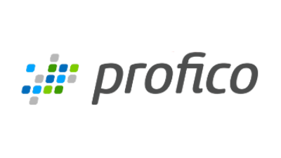
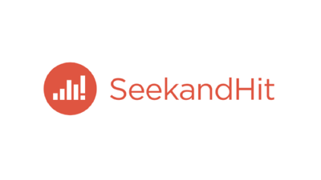
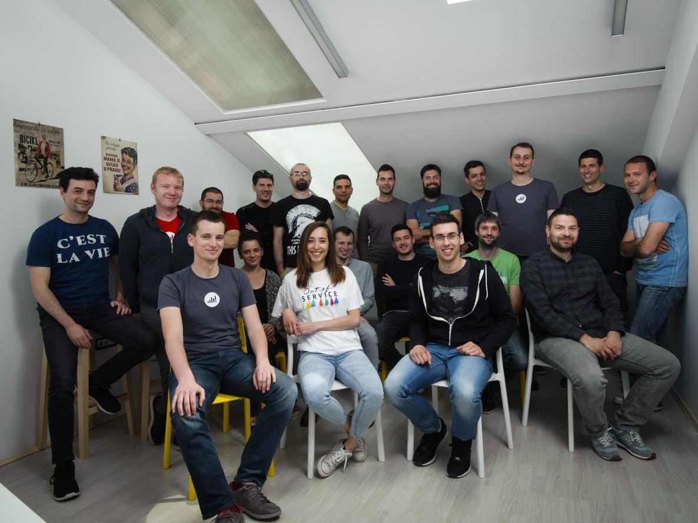

generalni sponzor
Ova progresivna agencija za dizajn i razvoj digitalnih proizvoda obilježila je proteklu godinu kao prva splitska tvrtka u povijesti koja je uvrštena na prestižnu Deloitte listu najbrže rastućih tehnoloških kompanija u Srednjoj Europi.Osim već dokazane formule za uspjeh koju čine vrhunski tim, globalni klijenti te brzina kretanja kroz moderne tehnologije, na tržištu se pozicioniraju kao tvrtka koja se ne boji rješavati još neistražene probleme. Neki od problema na kojima trenutno rade vezani su uz sferu pametnih gradova, pomažu u izgradnji digitalnih proizvoda globalnim startupima u sharing ekonomiji, kreiraju rješenja za upravljačku automatizaciju, telekom industriju, te brojne druge vertikale. Po svemu sudeći, Profico strelovito raste i u 2018., a dio svoje priče podijelit će sa širom javnosti kao generalni sponzor DUMP Days konferencije.
Zlatni sponzori
.jpg)
Kroz višegodišnju suradnju s najboljim organizacijama na svijetu kao što su Harvard, MIT, Johnson & Johnson i Fitch Ratings, prepoznati su kao vodeći pružatelj usluga u području online učenja. Želja im je pomoći obrazovnim institucijama i tvrtkama stvoriti nove, revolucionarne načine učenja jer je klasično učenje često dosadno, zastarjelo i monotono. Svrade u opuštenoj atmosferi iz njihovih ureda u Bostonu, New Yorku, Splitu i Zagrebu.

Prisutni na stranom i domaćem tržištu, NETMedijevci pokrivaju puno toga - od kompleksnih poslovnih sustava do web platformi i mobilnih aplikacija, a od nedavno rade i na svom proizvodu. U njihovom uredu cijelo vrijeme prevladava obiteljska atmosfera u kojoj se nitko ne boji izreći svoje mišljenje, ali isto tako se teško zamisliti u situaciji da moraš raditi bez nekoga. Ima ih iz generacija X, Y i Z, a uz preko 100 godina kolektivnog rada u praksi svi pričaju jezikom "1 i 0", kombinirajući savršen miks iskustva i nove energije.
 SeekandHit je specijalizirana agencija za digitalni marketing, analitiku i obradu podataka nastala 2007. godine. Do danas su isporučili preko 1000 uspješnih oglasnih kampanja za tvrtke poput Podravke, Valamar Riviere, Kiwi.com, Emmezete, VIP-a, HT-a, HBO-a i mnogih drugih. Od 2012. SeekandHit aktivno surađuje s jednom od najvećih tvrtki za analitiku na društvenim mrežama Socialbakers, a nositelji su i certifikata Premier Google Partner, Facebook Blueprint Certified Buyer i Facebook Blueprint Certified Planner.